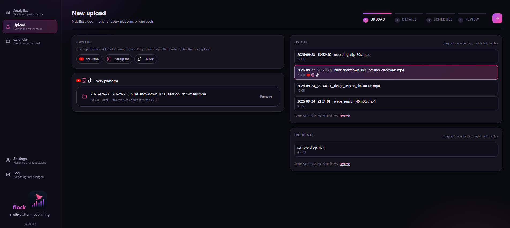
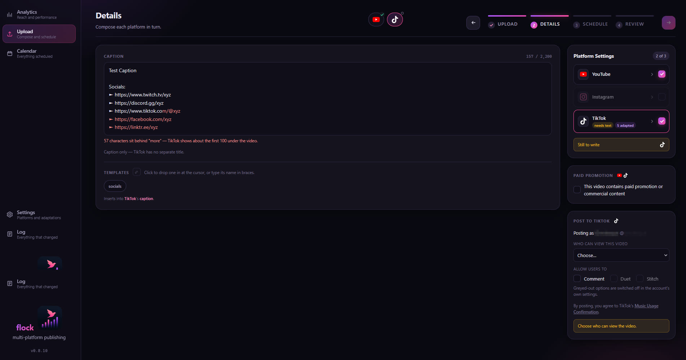
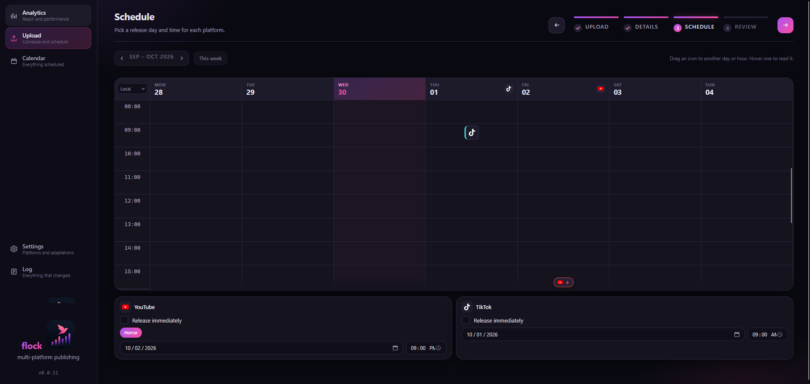
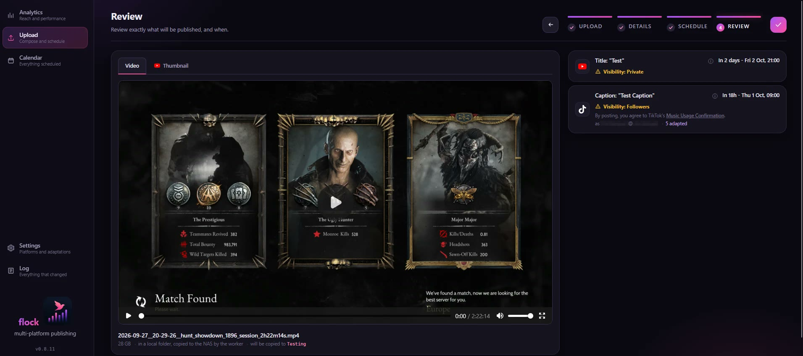
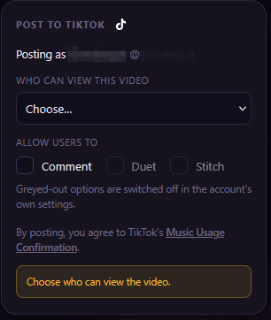

One video, every platform, each on its own schedule.
flock is an open-source, self-hosted publishing tool. You write the text for each platform separately, choose a video and a release time per platform, and a worker on your own storage publishes it to YouTube, TikTok and Instagram when the time comes.
What flock is
flock is software you run yourself: a small database (PocketBase), a worker process on a machine that stays on, and the web app in your browser, all on your own hardware and your own network. There is no hosted service and no account with the author. Each installation connects its own YouTube, TikTok and Instagram accounts through those platforms' own consent pages, using developer apps the installer registers, so keys and tokens never leave the installer's configuration file. The code is on GitHub under the MIT license.
What it does
Every platform reads differently, so flock treats each one as its own post.
Text per platform
Titles, captions and tags are written separately for each platform, because a link or a hashtag style that works on one reads badly on another. Adaptation rules can rewrite text automatically before it is published.
A release time per platform
Each platform gets its own day and hour on a week grid. Drag a card to move it, type an exact time, or pick a saved pattern such as "Fridays at 21:00".
Publishing from the NAS
Confirming an upload only queues it. A worker beside the database publishes at the scheduled time, so the computer that composed the post can be switched off.
Posting to TikTok, TikTok's way
Audience, comments, duets, stitches and the commercial-content disclosure are chosen per post, from what the account offers, with nothing preselected.
Video from the browser or the NAS
A video can be uploaded through the browser, or picked from a watch folder on the NAS, which is how files above the browser's size limit are published. One upload can send a different cut to each platform.
Analytics and a log
Live counters for the newest videos on the YouTube channel, and a log of every change with the machine that made it.
The screens
An upload is four steps: Upload, Details, Schedule, Review.




Posting to TikTok
flock uses TikTok's Login Kit and the Content Posting API's Direct Post. The post screen follows TikTok's content sharing guidelines.
- Who posts is shown. The account's display name and handle, read from TikTok before every post.
- The audience is chosen per post. The list holds exactly the options TikTok reports for the account, and nothing is preselected.
- Interactions are off until switched on. Comments, Duet and Stitch start unticked, and are greyed out where the account has them disabled.
- Commercial content is disclosed. "Your brand" and "Branded content" can be declared, with TikTok's own note on how the post will be labelled. Branded content cannot be posted privately.
- The declaration is on every post. "By posting, you agree to TikTok's Music Usage Confirmation", with the Branded Content Policy added for branded content.
- The post is TikTok's to finish. The file is uploaded in chunks, the status is polled until TikTok reports the post published, and the notice says it may take a few minutes to appear.
Permissions requested: user.info.basic, to show which account a post goes to, and
video.publish, to post it. Nothing else is read from the account. Each installation uses a
TikTok developer app of its own, so its client key and secret stay in its own configuration.

Get flock
The code, the install steps and the full walkthrough are on GitHub.
-
What you need
Node 22 or newer with pnpm, a PocketBase instance of flock's own, and a machine that stays on for the worker, a NAS for example. flock is not meant to be reachable from the public internet.
-
Install
Clone the repository, run
pnpm install, point.envat your PocketBase, and runpnpm setup-pbonce to create the collections.pnpm devruns it locally;pnpm deploybuilds it into PocketBase's ownpb_public, so PocketBase serves the app itself. -
Connect your accounts
Register a developer app on each platform you use (Google Cloud for YouTube, TikTok for Developers, a Meta app for Instagram), paste its keys into the worker's configuration file, and run the consent flow once per platform from the terminal. The README walks through each portal.
-
Run the worker
pnpm workerpolls the queue, publishes at each slot, keeps the tokens fresh and feeds the Analytics screen. It belongs on the machine that stays on.
flock is released under the MIT license: use it, change it, and keep the notice.